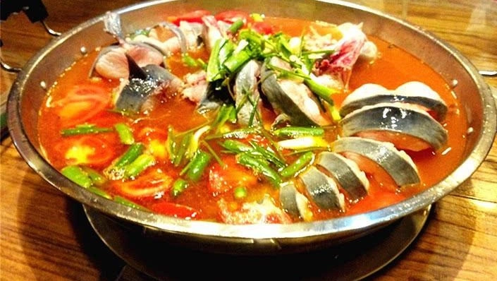
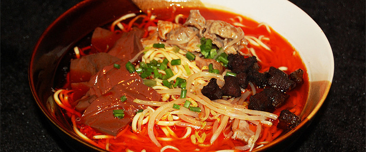

Qianxi
Qianxi, often referred to as 'The Pearl of Western Guizhou', is my beloved hometown located in Guizhou Province, Southwest China. It is known for its rich history, vibrant culture, and natural beauty. With a history spanning over 2300 years, Qianxi boasts various historical sites, like the Ancient Post Road of the Three Gorges, and traditional villages that reflect its deep historical roots.
| Qianxi | |
|---|---|
| Country: | People's Republic of China |
| Province: | Guizhou |
| Area: | 2380.5 km2 |
| Population: | 970,700 |
| Time zone: | UTC+8 |
| Website: | www.gzqianxi.gov.cn |
Foods
Sour Soup Fish
Sour Soup Fish, also known as Guizhou Sour Soup Fish (or "Guizhou Suan Tang Yu" in Mandarin), is a traditional and popular dish in the Guizhou province of China. This dish represents the Guizhou culinary tradition of combining sour and spicy flavors to create unique, mouth-watering meals. The main ingredient of this dish is fresh fish, often carp or catfish, which is marinated with ginger, garlic, and other spices before being cooked. The key to the dish is the sour soup base, which is typically made from tomatoes and fermented sticky rice, a special local ingredient that gives the soup its distinctive sour taste. Various other ingredients like peppers, pickled chili, mushrooms, bean sprouts, and other local vegetables are added to the soup, enhancing its flavors and creating a multi-layered taste experience. The soup is simmered until the flavors blend together, and then the marinated fish is added and cooked until it becomes tender. Guizhou Sour Soup Fish is noted for its hot and sour taste, which is refreshing and appetizing. It's not just a feast for the palate, but also a perfect balance of nutrition, featuring a high protein content from the fish and abundant vitamins from the vegetables. Like many Chinese dishes, Guizhou Sour Soup Fish is usually served with steamed rice. Enjoying this dish is a fantastic culinary journey that allows you to experience the richness and diversity of Guizhou's food culture.
Changwang Noodles
Guiyang Changwang Noodles, also known as Intestine and Blood Curd Noodles, is a traditional delicacy from Guiyang, the capital city of Guizhou province in southwest China. The main ingredients of Guiyang Changwang Noodles include fresh noodles, pig intestines, and blood curd, often garnished with pickled Chinese long beans, pickled mustard greens, scallions, coriander, and chili oil. The noodles are typically hand-pulled and cooked until they are al dente. The pig intestines are thoroughly cleaned, boiled, then stir-fried with seasonings until they are fragrant. The blood curd, usually made from pig's blood, provides a unique texture and flavor to the dish. It is stewed until it's tender. The soup base is another crucial part of the dish. It is generally a bone broth simmered for a long time. The pickled vegetables add a slightly sour taste, which helps to balance the rich flavors of the intestines and blood curd. A generous dash of chili oil is often added at the end to enhance the overall flavor, giving the dish a spicy kick. Guiyang Changwang Noodles is well-loved for its complex flavors - spicy, sour, salty, and umami all at the same time. It's a comfort food for the locals and a must-try for food adventurers visiting Guiyang.